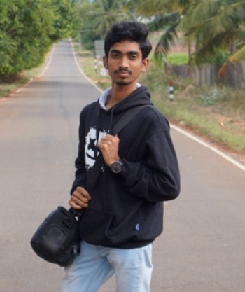

S. SURENDRAN
LEAD & ELECTRICAL TEAM,INDAGRIC.
FOR THE FORMERS , BY THE INNOVATORS , OF THE COUNTRY
At INDAGRIC we are passionate about revolutionizing the agricultural industry with innovative solutions and environment friendly science to develop the productivity rate of agricultural crops which ensures increased net farm income to the farmers through various products. With a deep-rooted commitment to sustainable farming practices and cutting-edge technology, we aim to address the challenges faced by the agricultural community and pave the way for a more prosperous and food-secure future.
To develop the productivity rate of agricultural crops using environment friendly science and technology which ensures increased net farm income to the farmers through various products
To make Agriculturee profitable and attractive enterprise with sustainable and to accelerate the world's agriculture to automation
Our team aims create a user-friendly,autonomous pesticide spraying adaptable to agricultural fields. it prioritizes farmer-friendliness, easy maintanance, and disease management for increased crop profits while minimizing human worker pesticide exposure
INDAGRIC is a team of dedicated innovators in agriculture, technology and sustainability. We bring together decades of experience and young minds with shared belief in the power of agriculture to transform lives. Our diverse team includes agronomists, engineers, data scientists, and business professionals, all working together to provide holistic solutions to farmers worldwide.
At INDAGRIC, we offer a wide range of agricultural solutions designed to address the unique challenges faced by farmers. Our services include:
We invite you to join us on this exciting journey to transform agriculture for the better. Whether you are a farmer looking to enhance your productivity or a stakeholder in the agricultural industry or an innovator trying to change the world with us, we welcome you to explore our website and discover how INDAGRIC can be your partner in growth and sustainability.
Thank you for choosing INDAGRIC as your trusted source for agricultural solutions. Together, we can create a brighter, more sustainable future for agriculture.
S. SURENDRAN
LEAD & ELECTRICAL TEAM,INDAGRIC.
A. THAHA ABDUL HAMEED
CO-LEAD & PROGRAMMING TEAM,
INDAGRIC.
A. SURYARAJU
MECHANICAL TEAM LEAD,
INDAGRIC.
K. R. PRANAV BALAJI
PUBLIC RELATIONS TEAM LEAD,
INDAGRIC.